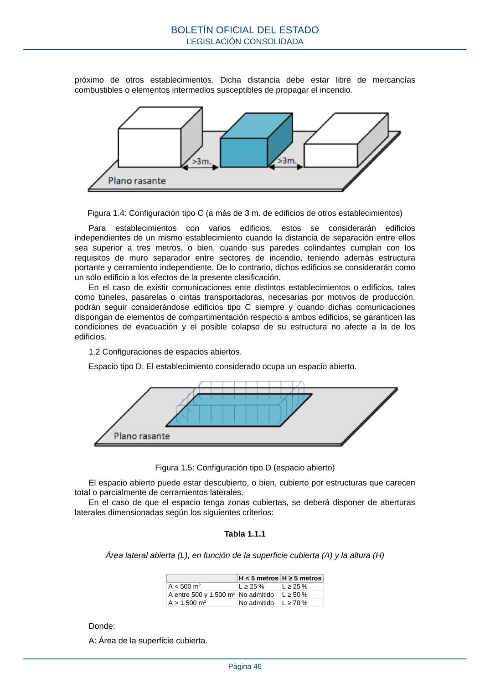

RSCIEI · edición 2025-04-10 · capa asociada
Documento RSCIEI-asociada · SHA-256 del PDF 85aa0af25d51e5b58d8975a4eefbf76d3f57a8933445cfe814ae9c4818a2e3e7
Página física 46 de 108.
Copia fiel del PDF fuente · Fuente oficial
Ficha de la disposición en la fuente oficial
Texto extraído y reorganizado: Basado en datos de la Agencia Estatal Boletín Oficial del Estado. PDF reproducido: Fuente de los datos: Agencia Estatal Boletín Oficial del Estado.
Formato: Texto de la página (Markdown)
próximo de otros establecimientos. Dicha distancia debe estar libre de mercancías combustibles o elementos intermedios susceptibles de propagar el incendio. Figura 1.4: Configuración tipo C (a más de 3 m. de edificios de otros establecimientos) Para establecimientos con varios edificios, estos se considerarán edificios independientes de un mismo establecimiento cuando la distancia de separación entre ellos sea superior a tres metros, o bien, cuando sus paredes colindantes cumplan con los requisitos de muro separador entre sectores de incendio, teniendo además estructura portante y cerramiento independiente. De lo contrario, dichos edificios se considerarán como un sólo edificio a los efectos de la presente clasificación. En el caso de existir comunicaciones ente distintos establecimientos o edificios, tales como túneles, pasarelas o cintas transportadoras, necesarias por motivos de producción, podrán seguir considerándose edificios tipo C siempre y cuando dichas comunicaciones dispongan de elementos de compartimentación respecto a ambos edificios, se garanticen las condiciones de evacuación y el posible colapso de su estructura no afecte a la de los edificios. 1.2 Configuraciones de espacios abiertos. Espacio tipo D: El establecimiento considerado ocupa un espacio abierto. Figura 1.5: Configuración tipo D (espacio abierto) El espacio abierto puede estar descubierto, o bien, cubierto por estructuras que carecen total o parcialmente de cerramientos laterales. En el caso de que el espacio tenga zonas cubiertas, se deberá disponer de aberturas laterales dimensionadas según los siguientes criterios: Tabla 1.1.1 Área lateral abierta (L), en función de la superficie cubierta (A) y la altura (H) H < 5 metros H ≥ 5 metros A < 500 m2 L ≥ 25 % L ≥ 25 % A entre 500 y 1.500 m2 No admitido L ≥ 50 % A > 1.500 m2 No admitido L ≥ 70 % Donde: A: Área de la superficie cubierta. BOLETÍN OFICIAL DEL ESTADO LEGISLACIÓN CONSOLIDADA Página 46

Datos candidatos: compruebe celdas y notas en el PDF.